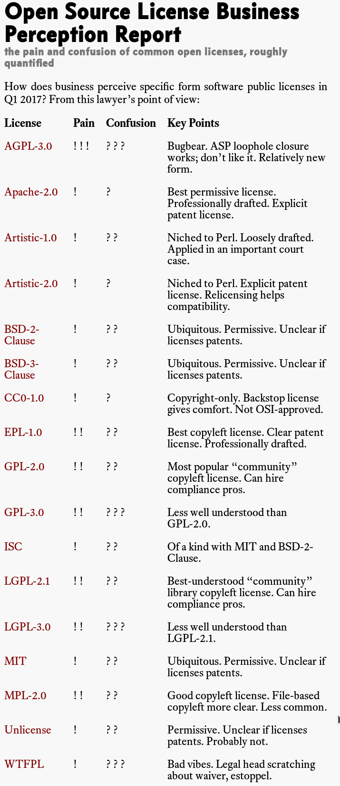

Learnings about copyright and licensing
June 2017 Edition
edolnx on most things (Twitter,GH,GL,Slack,etc)
Involved with Open Source since 1996
By Day I am a Cloud Systems Developer at Kumulus Technologies
By Night I Fight Crime run a small hosting company called Sphere Cube Host
Previously: Startups, SMBs, Enterprises, Government
I am not a lawyer
Disclaimers!
Copyright
Licensing
Addons
Companies & Open Source
Contributing
Why you should care
Next steps
I am not a lawyer and this is not legal advice
I know Open Source != Free Software, and I'm not using the latter term for a reason
I'm sharing my experiences to date, YMMV
You should discuss these topics with your lawyer
In most cases, your company's lawyer is not your lawyer
Most of my experience is related to law in the 5th Circuit and in Texas and may not apply elsewhere
Since 1989 in the USA, everything is automatically copy written by the owner when created
Copyright means all rights reserved by the copyright owner exclusively
That exclusivity lasts for 70 years (or more) after the creation of the work
To allow others to legally use or modify your work you must license it
Grants rights to people other than the copyright owner(s) of the work
Copying and distribution are forbidden otherwise
Modification is also forbidden without a license
I made some of these groups up, but they will help with later discussions.
Copyleft
Academic
Well Known Open Source
Creative Commons
Everything Else
Your various GNU licenses (GPLv2, GPLv3, AGPL, LGPLv3, etc.)
Must provide attribution, must share what you got, must share changes back, “infectious” (less so for AGPL and LGPL)
Designed to be the opposite of Copyright (hence Copyleft)
BSD & MIT
I also clump things like LLVM and X11 in here too
Opposite end of the spectrum from copyleft. Do what you want, not my problem.
Apache v2: Must provide attribution in source, must share what you got, and everything else is good. This is the most common license for commerical Open Source.
Artistic: This is used for Perl
There are others like the Eclipise Public License that are widely used
Great for non-code, easy to understand, easy to pick. These span the spectrum from public domain work-alike (CC0) to a copyleft work-alike (CC-BY-SA-NC).
These are best for non-software things like docs, hardware designs, websites, etc.
There there be dragons. Tread carefully (or better still not at all).
There is an incredible amount of awesome here. It's better understood than it was before and the Lawnmower doesn't seem to care anymore.
"The Software shall be used for Good, not Evil." Seriously?!
Sometimes the license misses things, sometimes you are thinking ahead...
Usually stipulates that you won't patent your contributions, and/or you grant a royalty free license to any user of this code
Some orgs (OpenStack and Canonical are good examples) have trademarks for their products/projects. This allows them to control their IP in conjunction with their code.
This is a powerful tool that can be used for good and evil. Means all contributions are property of the project and usually requires some form of corporate entity to own the project.
An example of evil: OpenOffice.
An example of good: Ogre3D.
An example of not having this: OpenSSL.
A Corporate Contribution License Agreement (CCLA) makes it easier to cover everyone in an org instead of each individual contributor. More on this later.
Most companies have an unfavorable view of copyleft in general and the GPL specifically.
This isn't surprising since companies and FSF/SFC have opposing goals.
You'll have less resistance with an Academic or Apache v2 license in most orgs.
Preamble: Finally, any free program is threatened constantly by software patents. We wish to avoid the danger that redistributors of a free program will individually obtain patent licenses, in effect making the program proprietary. To prevent this, we have made it clear that any patent must be licensed for everyone's free use or not licensed at all.
Makes any patents tied to software royalty free or unenforceable
2(b) You must cause any work that you distribute or publish, that in whole or in part contains or is derived from the Program or any part thereof, to be licensed as a whole at no charge to all third parties under the terms of this License.
The linking clause. Linking a GPLv2 library makes your code also GPLv2 (hence "infectious")
6: Each time you redistribute the Program (or any work based on the Program), the recipient automatically receives a license from the original licensor to copy, distribute or modify the Program subject to these terms and conditions. You may not impose any further restrictions on the recipients' exercise of the rights granted herein. You are not responsible for enforcing compliance by third parties to this License.
You cannot relicense GPLv2 works. You cannot sell GPLv2 code. If you multi-license you cannot take away rights granted or restrictions enforced by the GPLv2
9. [...]If the Program specifies a version number of this License which applies to it and "any later version", you have the option of following the terms and conditions either of that version or of any later version published by the Free Software Foundation. If the Program does not specify a version number of this License, you may choose any version ever published by the Free Software Foundation.
"Or later". Did the author opt out? Congraulations that code is now GPLv3
NOTE! This copyright does *not* cover user programs that use kernel services by normal system calls - this is merely considered normal use of the kernel, and does *not* fall under the heading of "derived work". Also note that the GPL below is copyrighted by the Free Software Foundation, but the instance of code that it refers to (the Linux kernel) is copyrighted by me and others who actually wrote it.
Also note that the only valid version of the GPL as far as the kernel is concerned is _this_ particular version of the license (ie v2, not v2.2 or v3.x or whatever), unless explicitly otherwise stated.
Anything that is user space is outside the linking clause scope. Also no auto upgrade.
3. Protecting Users' Legal Rights From Anti-Circumvention Law
No covered work shall be deemed part of an effective technological measure under any applicable law fulfilling obligations under article 11 of the WIPO copyright treaty adopted on 20 December 1996, or similar laws prohibiting or restricting circumvention of such measures. When you convey a covered work, you waive any legal power to forbid circumvention of technological measures to the extent such circumvention is effected by exercising rights under this License with respect to the covered work, and you disclaim any intention to limit operation or modification of the work as a means of enforcing, against the work's users, your or third parties' legal rights to forbid circumvention of technological measures.
Passwords count as anti-circumvention. Just sayin'
5(c). You must license the entire work, as a whole, under this License to anyone who comes into possession of a copy. This License will therefore apply, along with any applicable section 7 additional terms, to the whole of the work, and all its parts, regardless of how they are packaged. This License gives no permission to license the work in any other way, but it does not invalidate such permission if you have separately received it.
This is the new and “improved” linking clause.
11. Patents
Each contributor grants you a non-exclusive, worldwide, royalty-free patent license under the contributor's essential patent claims, to make, use, sell, offer for sale, import and otherwise run, modify and propagate the contents of its contributor version.
Much more clear
3. Grant of Patent License
Subject to the terms and conditions of this License, each Contributor hereby grants to You a perpetual, worldwide, non-exclusive, no-charge, royalty-free, irrevocable (except as stated in this section) patent license to make, have made, use, offer to sell, sell, import, and otherwise transfer the Work, where such license applies only to those patent claims licensable by such Contributor that are necessarily infringed by their Contribution(s) alone or by combination of their Contribution(s) with the Work to which such Contribution(s) was submitted. If You institute patent litigation against any entity (including a cross-claim or counterclaim in a lawsuit) alleging that the Work or a Contribution incorporated within the Work constitutes direct or contributory patent infringement, then any patent licenses granted to You under this License for that Work shall terminate as of the date such litigation is filed.
This is a big reason why companies like Apache v2
6. Trademarks
This License does not grant permission to use the trade names, trademarks, service marks, or product names of the Licensor, except as required for reasonable and customary use in describing the origin of the Work and reproducing the content of the NOTICE file.
Things like this open a door for a CLA and not allowed under copyleft
Kyle E Mitchell has similar views:
Understand the license
Understand if you are allowed to contribute
Understand what you are allowed to contribute
Intention vs Law
"I give you source code, you give me your changes back, we're even. That's my take on GPLv2. It's that simple. Version 3 extended that in ways I personally am really uncomforable with. I give source code, that means that if you use that source code you can't use it on your device unless you follow my rules." -Linus Torvalds at DebConf 14
The license is legal code, and you need to know what it says and means
Intention vs Law
If you want to use lightGallery to develop commercial sites, themes, projects, and applications, the Commercial license is the appropriate license. With this option, your source code is kept proprietary. Purchase a lightGallery Commercial License at uplabs.com/posts/lightgallery-plugin
If you are creating an open source application under a license compatible with the GNU GPL license v3, you may use this project under the terms of the GPLv3.
That's not how this works. That's not how any of this works.
Owner != Author
If the work is made for a company while the author is under a work for hire, the company becomes the author and thus the owner of the copyright
Which means if you wrote code while at work, it’s not yours anymore, it’s your company’s. That means you cannot assign a license to it or agree to the terms of a license. Only your company can.
In Texas, most employees are work for hire
This is the new hotness. Linux Kernel, OpenStack, DockerMoby, Chef, and other use it.
My beef: this puts the onus on me to prove I am allowed to do this. As opposed to a CCLA that protects me from that by saying my company agrees.
You should have a discussion with your management (or vice versa) about what you are doing and why
Get everything in writing and keep it.
Almost none of the OSS licenses have a clean way to change the license of a project without a CLA - so you only get one shot
What license you choose will shape who uses your code
As a project maintainer it's your responsibility to protect the project and your contributors
Your contributions could jeopardize an open source project
You could be exposing your company to a lawsuit by using someone else’s code
You could be exposing yourself to action from your company for releasing “Proprietary IP”
This is probably as horrible as it sounds
If not, find alternatives for that code
This includes license, possible CLA, and systems for that
EFF is a great resource
Tech Law Garden is my awesome lawyer, and she's looking for clients